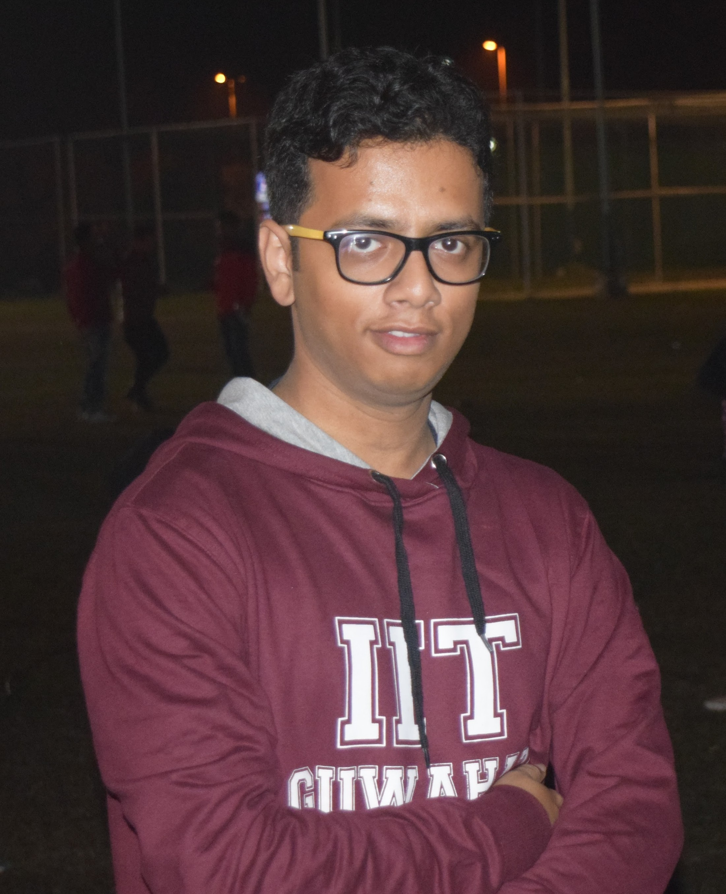

|  | Sukanta Dey
Postdoctoral Research Associate M.Tech.-Ph.D. (IIT Guwahati, 2021) E-mail: sukanta.dey[at]ufl.edu Resume/CV (as of July, 2020) |
About
Dr. Dey is a Postdoctoral Research Associate at the Department of Electrical and Computer Engineering (ECE), University of Florida, Gainesville, FL, US. He received his Master’s and Ph.D. from the Department of Computer Science and Engineering, IIT Guwahati in March 2021, specializing in Machine Learning techniques for Electronic Design Automation (EDA). His Ph.D. thesis title is "Design Methodology for On-Chip Power Grid Interconnect: AI/ML Perspective". Prior to joining IIT Guwahati, he received his Bachelor's in Electronics and Telecommunication Engineering from Assam Engineering College in July 2014. His domain of expertise is Machine Learning, Deep Learning, EDA, VLSI CAD, VLSI Physical Design, and Hardware Security. His research works have been published in reputed EDA journals/conferences, e.g., ACM TODAES journal, IEEE/ACM DATE, IEEE ISVLSI, IEEE/ACM VLSID conferences. He has served as a technical program committee member, expert reviewer, and organizing committees of premier ACM and IEEE conferences, including Design Automation Conference (DAC). He is also serving as research paper reviewer of reputed IEEE, IET journals. His research is being sponsored by SRC, DARPA, AFRL, DoD, Analog Devices, ANSYS, and Cisco. He is a member of IEEE and ACM.
Educations
MTech + PhD, Computer Scinece and Engineering, IIT Guwahati (July 2014 to March 2021)
B.E., Electronics and Telecommunication Engineering, Assam Engineering College (August 2010 to July 2014)
Research interests
VLSI CAD/Electronics Design Automation and Desgin for Manufacturability(DFM)/ Reliability(DFR) for System-on-Chip (SoC).
More-than-Moore interconnects for Multicore processor/ Multiprocessor SoC (MPSoC) - 3D IC, Network-on-Chip, Optical, Wireless.
Machine Learning, Combinatorial Optimization, and Computational Intelligence.
Hardware and Systems Security, Adversarial Machine Learning, Cryptography, Internet-of-Things (IoT).
TPC Member/Paper Reviewer/Expert Reviewer
IEEE Transactions on Computer-Aided Design of Integrated Circuits and Systems (TCAD)
IEEE Transactions on VLSI Systems (TVLSI)
ACM/IEEE Design Automation Conference (DAC)
IEEE Symposium on Security and Privacy (S&P) [Shadow PC]
International Conference on VLSI Design (VLSID) [TPC Member]
IEEE Access
Journal of Electronic Materials, Springer
IET Computer and Digital Techniques
IET Circuits, Devices, and Systems
Journal of Circuits, Systems, and Computers
IET Signal Processing
IET Image Processing
IET Electronics Letters
IET Wireless Sensor Systems
International Conference on Soft Computing for Problem Solving (SocPros)
News
08-07-2022: Preprint of our work on "Secure Physical Design" is now online.
27-09-2021: Joined University of Florida as Postdoctoral Associate
22-03-2021: Defended my PhD dissertation!
09-11-2020: My work on "Design Space Exploration of Power Grid Design" accepted in Elsevier MICPRO Journal.
29-09-2020: PhD Dissertation Submitted.
21-07-2020: DAC Trivia Winner at DAC 2020 Conference.
30-06-2020: Presented my PhD Synopsis Seminar.
05-05-2020: My work on "Machine Learning-based Aging Prediction for On-Chip Power Grid" accepted in ACM TODAES Journal.
21-04-2020: Presented paper at DATE 2020 virtual conference (Conference rescheduled online from 21st April to 31st May 2020, due to COVID-19 outbreak).
27-12-2019: Selected for Travel Grant from ACM India-IARCS for attending DATE 2020.
01-11-2019: My work on "Deep Learning-based On-Chip Power Grid Design" is accepted as long presentation paper in DATE 2020.
24-09-2018: One co-authored paper accepted in VLSID 2019, New Delhi, India.
09-07-2018: Presented paper at ISVLSI 2018, Hong Kong SAR, China.
06-07-2018: Selected for Travel Grant of USD 250 from IEEE ISVLSI'18 organization committee to attend Hong Kong for paper presentation.
21-04-2018: My work on "Reliability-Constrained Framework for VLSI Power Grid Design Optimization" is accepted as regular oral paper in ISVLSI 2018.
09-01-2017: Presented paper at VLSID 2017, Hyderabad, India.
10-10-2016: My work on "Fast VLSI Power Grid Analysis" is accepted as regular paper in VLSID 2017.
03-12-2015: Start Intern at Texas Instruments India, Bengaluru, India.
23-07-2014: Joined IIT Guwahati for MTech-PhD program.